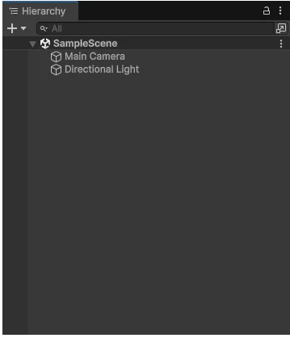
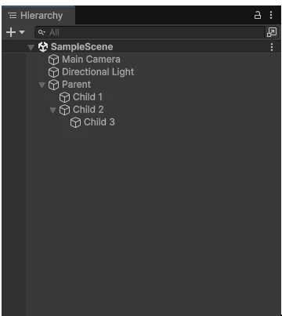

Use the Hierarchy window to create and organize GameObjects and control their visibility in a scene.
The Hierarchy window displays every GameObjectThe fundamental object in Unity scenes, which can represent characters, props, scenery, cameras, waypoints, and more. A GameObject’s functionality is defined by the Components attached to it. More info
See in Glossary in a scene, including models, cameras, and prefabsAn asset type that allows you to store a GameObject complete with components and properties. The prefab acts as a template from which you can create new object instances in the scene. More info
See in Glossary. You can use the Hierarchy window to manage and group the GameObjects you use in a scene. When you add or remove GameObjects in the Scene view, you also add or remove them from the Hierarchy window.

The Hierarchy window can also display other scenes, with each scene containing its own GameObjects. You can have more than one scene open in the Hierarchy window at the same time. For more information, refer to Work with multiple scenes in Unity.
To create a new GameObject in the Hierarchy window:
You can also use the keyboard shortcut Ctrl+Shift+N (macOS: Cmd+Shift+N) to create a new empty GameObject.
Note: By default, Unity creates new GameObjects in rename mode. To disable this behavior, open the More (⋮) menu in the Hierarchy window and deselect Rename New Objects.
To duplicate a GameObject, right-click the target GameObject and select Duplicate.
You can also use the keyboard shortcut Ctrl+D (macOS: Cmd+D) to duplicate the selected GameObject.
By default, the Hierarchy window lists GameObjects by order of creation, with the most recently created GameObjects at the bottom. You can reorder the GameObjects by dragging them up or down.
Unity uses the concept of parent-child hierarchies, or parenting, to group GameObjects. A GameObject can contain other GameObjects that inherit some of its properties. Child GameObjects inherit the movement and rotation of the parent GameObject. To learn more, refer to Transform componentA Transform component determines the Position, Rotation, and Scale of each object in the scene. Every GameObject has a Transform. More info
See in Glossary.
You can link GameObjects together to help move, scale, or transform a collection of GameObjects. When you move the top-level GameObject, or parent GameObject, you also move all child GameObjects.
To group items into a parent-child hierarchy, select the child object and drag it onto the parent object. To ungroup items, select the child object and drag it to a different position in the Hierarchy window.
You can also create nested parent-child GameObjects. All nested objects are still descendants of the original parent GameObject, or root GameObject.
To set parent-child relationships in a C# script, use the Transform.SetParent method or the Transform.parent property of the child GameObject.

To create a child GameObject, drag it onto another GameObject in the Hierarchy window.
You can cut or copy a selected GameObject and then paste it as a child of another GameObject. Pasted child GameObjects keep their world position.
To paste a GameObject as child:
You can also press Ctrl+Shift+V (macOS: Cmd+Shift+V) to paste a GameObject as a child.
You can add a new GameObject into the Hierarchy window as the parent of existing GameObjects.
To create a parent GameObject:
You can also use the keyboard shortcut Ctrl+Shift+G (macOS: Cmd+Shift+G) to create a parent GameObject when you have selected a GameObject.
In the Hierarchy window, you can toggle the visibility of child GameObjects in the following ways:
You can make any GameObject in the Hierarchy window the default parent. When you create a new GameObject, or drag a GameObject into the Scene view, Unity automatically makes this GameObject a child of the default parent GameObject.
To set a GameObject as the default parent:
The name of the default parent GameObject in the Hierarchy window is bold.
To remove default parent status from a GameObject:
You can only set one default parent per scene. In the Hierarchy window, if you set a GameObject as the default parent, and then you make a different GameObject in the same scene the default parent, only the second GameObject is the default parent.
If you have multiple scenes in the Hierarchy window, and you set default parents in each scene, when you drag a GameObject into the Scene view, Unity makes the default parent GameObject in the active scene the parent of the new GameObject.
You can set a keyboard shortcut for the default parent setting in the Shortcuts manager. On the Shortcuts window, assign a keyboard shortcut to Hierarchy View > Set as Default Parent. If there’s no default parent set, and in the Hierarchy window you select a GameObject, use the shortcut to make this GameObject the default parent. When a default parent is set, use the shortcut to remove default parent status from any GameObject that has it.
If you have a scene with many GameObjects, it can be difficult to find and select specific GameObjects in the Scene view. To clear the Scene view without impacting the visibility or behavior of GameObjects in the game, you can toggle the visibility and pickability of GameObjects from the Hierarchy window:
Note: If you select multiple GameObjects, press H to hide and show them, and L to toggle their pickability.
For more information, refer to Scene visibility and Scene picking.